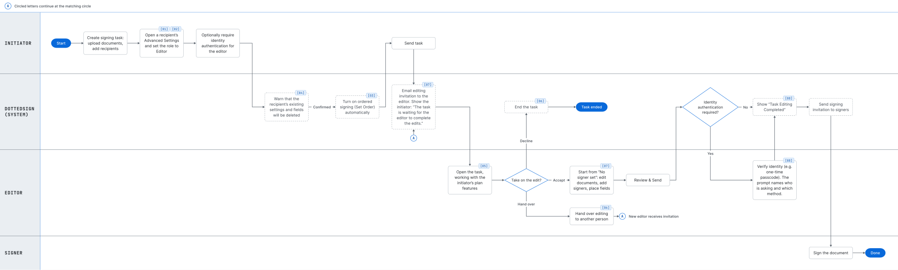

The system I was designing inside
An e-signature product rests on one promise: once a document is signed, nothing about it can change. That promise is what gives the signature legal weight, and DottedSign enforced it strictly. Create a signing task and its contents were fixed.
That constraint was correct. It was also blocking a sale.
The trigger
A large Japanese real estate client told us they would not buy without the ability to change a task after it had been created. It would have been easy to log that as one client's custom requirement. When I looked at how they actually worked, it wasn't.
In their offices the person who creates a signing task is an administrative assistant. Their job is to start the process. They are not the person who knows which contracts a given deal requires — that is the case handler, further down the chain. The client told us this pattern covered around 70% of their signing volume.
DottedSign's model assumed the initiator was also the person who understood the deal. For this client — and for any organization where administrative work and domain knowledge sit with different people — that assumption was wrong.
How do you let a second person shape a task in flight, without weakening the immutability the product's legal standing depends on?
Constraints I was working within
- Legal. Nothing already signed may change, and every change must be attributable.
- Technical. The document framework couldn't support inserting an editing step at an arbitrary point in a flow.
- Commercial. Feature access in DottedSign is gated by account plan tier.
- Time. The deal had a deadline.
Design decisions
01Make Editor a role, not a new surface
A task in DottedSign is already a list of recipients. Each row has an avatar, a role, a name and an email, and a ⋯ menu holding that recipient's advanced settings. Rather than introduce a separate concept, I made Editor a value of the role the recipient already has — chosen in the panel where senders already go to configure a recipient.
Nothing new to find, and nothing new to learn. If you knew how to add a signer, you already knew how to add an editor.
Set Order Import Signer Group
Add Recipient
02Let the panel shed what the role can't use
A signer's advanced settings carry two things an editor has no use for: Checkers, who confirm the fields are properly filled before a signer completes, and Signer's Final Confirmation. An editor never signs, so neither applies to them.
Rather than disable them, or show them and let people wonder, the panel simply stops rendering them. Choosing Editor makes the panel shorter.
This is the part of the work I'd point at if someone asked what "clean" means in our product. It doesn't mean showing less. It means showing what this particular role can actually act on — which takes deciding, per role, what is real.
Role: signer
Role: editor — two settings gone
03Make the invalid state impossible to build
An editor only makes sense in an ordered flow. Someone has to go first and hand on to the next person; in unordered signing, where everyone signs at once, there is no "before" for the editor to occupy.
We could have blocked the combination with an error. Instead, choosing Editor turns ordered signing on. The product states the rule — "Editors can only be used in ordered signing" — and then satisfies it for you.
Validation tells someone they got it wrong after they've already done it. Making the invalid state unreachable means they never get to be wrong.
04Say out loud what a role change destroys
Switching a recipient's role invalidates the fields and settings already attached to them — a signature field belonging to a person who is no longer a signer has nowhere to go. So it clears them.
That is a destructive, non-obvious consequence of what looks like a small radio button, which is precisely when a product owes the user a sentence and a chance to back out.
If you change the role in the task, the existing settings or fields will be deleted, and the recipient's role will revert to its default values. Are you sure you want to change the role?
Destructive change, stated plainly
Set Order
The precondition, satisfied for you
05Inherit the initiator's plan, not your own
This is the decision I spent the longest on.
DottedSign gates features by account plan. If the initiator's plan includes advanced field types and the editor's doesn't, what can the editor do? Working under their own plan, they can't finish the task — they might be unable to place a field the initiator needs. The task becomes unfixable, which defeats the entire feature.
So the editor works with the initiator's entitlements, for that task only. They are acting on the initiator's behalf, so they get the initiator's capabilities. It also makes the editor's own plan irrelevant — which is what allows the editor to be someone outside the company entirely.
06Let the editor hand the job on, or refuse it
Being assigned as the editor doesn't make you the right editor. The initiator is guessing about someone else's knowledge and availability, and sometimes the guess is wrong.
So I gave the editor two exits, both switched on by the initiator: hand the editing privilege to someone else, or decline and stop the task. The permission model decides whether those exits exist; the editor decides whether to use them.
K. Sato (sato@—.jp)
07Show both sides of the wait
Handing a task to a second person creates a gap where nothing appears to be happening. For the initiator, the task simply stops. For the editor, it arrives without context.
The initiator's task gets a banner across the top of the document saying exactly what it is waiting for. The editor opens the same field editor the initiator would have used — and the signer selector reads No signer set, because at this point there genuinely isn't one. That empty state is the brief: adding the signer is the editor's job.
Initiator — stalled, and told why
Editor — an empty state that is the brief
08Name who is asking, and for what
An editor can be required to verify their identity before they finish. Verification prompts are where people stop and wonder whether they are being phished, so the modal answers both questions at once: who is asking, and by what method.
And when the editor's work is done, it ends on its own screen rather than dropping them back into a list. Their part is genuinely over — the signing invitation goes out automatically from there.
Sales Representative requires you to verify your identity with Receive OTP via email.
Get OTP verification codeRequester named, method named
A completed signed document will be sent to your email once all parties finish signing.
Task successfully edited.A real ending, not a redirect
What I designed and we didn't ship
I designed the Editor role to be placeable at any point in a flow — a case handler stepping in halfway, after some parties have already signed. That version needed rules the first-stage version never has to use: signed documents locked and visibly unselectable, an editor's authority running forward only, changes attributed in the audit trail.
The document framework couldn't support inserting an editing step at an arbitrary position within the deadline. I laid out the options and their costs, and the PM chose to ship the first-stage version, which covered the client's actual scenario.
So the immutability rules I designed are, so far, rules about a situation that cannot occur: an editor at the first stage runs before anyone has signed anything. And opening later stages needs more rules than the ones I wrote — what happens to a signer who has already been notified, whether a completed stage can be reopened at all.
not shipped
Outcome
The feature shipped and ran without incident. The client's workflow was unblocked and the deal closed. It was also used almost exclusively by that one client.
What I'd do differently
We never showed the design to the client who asked for it. The team's framing was that this was our product decision, not contract work, and validating with them would have undercut that framing. It protected how we saw ourselves, and it cost us the only real feedback loop we had.
We solved a structural problem without checking whether the structure was common. The gap — that the person who starts a signing workflow often isn't the person who understands it — was, I believe, real well beyond this company. DottedSign's own documentation describes the same split from the other direction: a salesperson starting a contract and handing it to an assistant. But I never tested that. I designed for it and moved on.
Recognizing an insight and demonstrating it has a market are two different pieces of work. I did the first one.